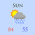
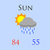

|
||
Light Lavalamp Status: Ongoing (last updated December 2010) |
|
Description: The demo was originally part of an experimental sidebar for my website before I had focused on a theme, so that is why the lights are oriented more to the left than the right. |